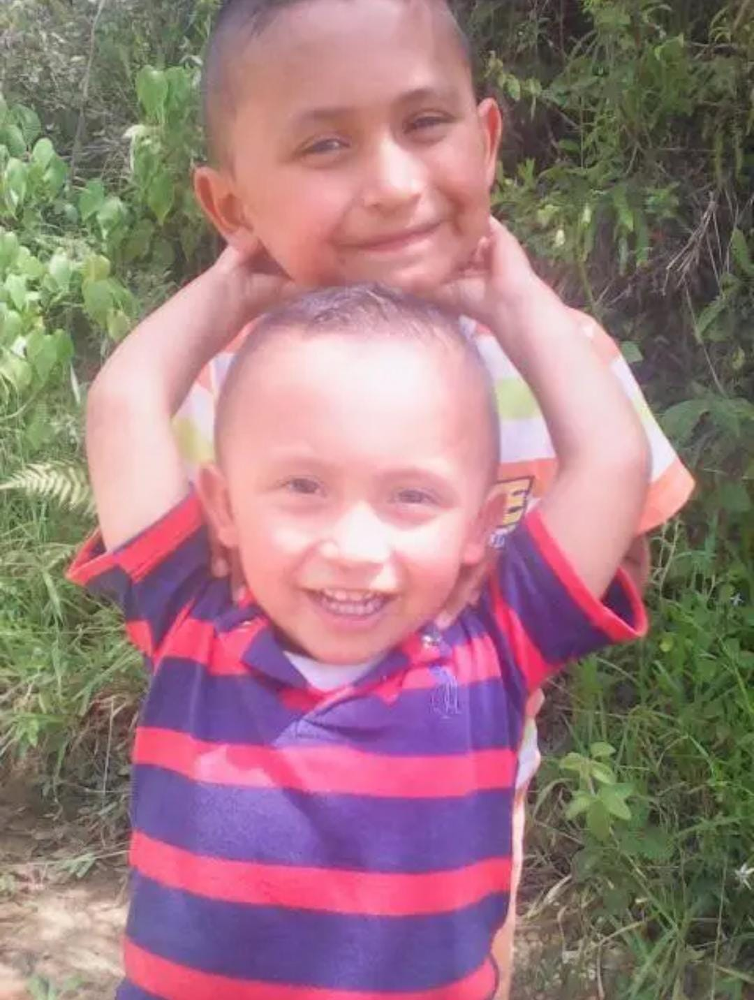

Un día muy especial
Nací el 17 de agosto de 2008 en la hermosa ciudad de San Gil, Santander. Fue un día lleno de alegría y esperanza para mi familia, marcando el comienzo de una nueva etapa en sus vidas.
- Era un domingo soleado.
- Mi familia me esperaba con mucha ilusión.
- El hospital estaba decorado por una fiesta local.
- Ese mismo día jugaba la selección Colombia.
"El día que naciste, el mundo se volvió un lugar un poco más brillante."